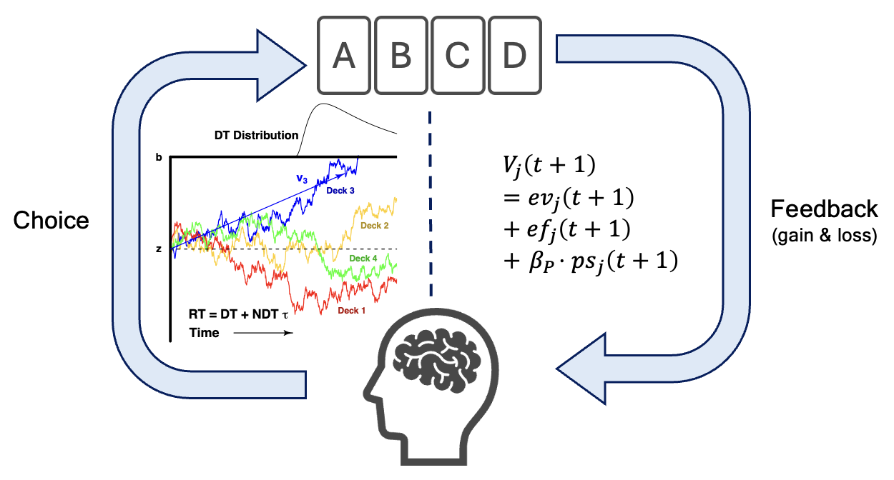
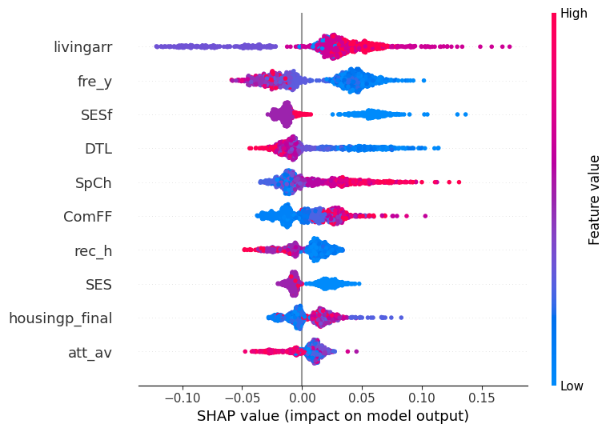
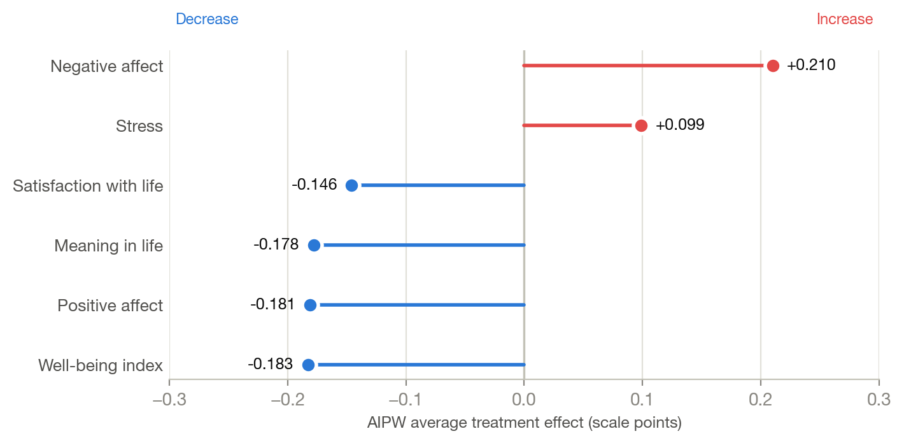

My projects use different methods — Bayesian cognitive models, joint behavioral–neural models, tree ensembles, causal forests — but follow a common approach. Each begins with a process that is not directly observed, specifies a model that would generate the observed data if that process operated as described, and examines how far the resulting estimates can be relied upon. Each page below gives the background, methods, and results.

Modeling Choice and Response Time in Value-Based Decision-Making
Reinforcement learning models of the Iowa Gambling Task use choice data alone, and the recovery of their individual-level parameters has received limited scrutiny. This project replaces the softmax choice rule with a racing diffusion process, so that choices and response times are accounted for by a single mechanism, and examines how well the seven individual-level parameters are recovered.
Background, model, estimation, and validation →
Joint Modeling of Single-Trial Behavior and fMRI Activity
Model-based cognitive neuroscience usually estimates cognitive parameters first and relates them to brain activity afterwards, which discards parameter uncertainty and prevents the neural data from informing the cognitive model. This project extends a lasso factor-analytic neural diffusion decision model to a rewarded recognition-memory task so that both components are estimated together.
Framework, linking function, and estimation →
Interpretable Machine Learning for Dyadic Prediction
Fertility desires within a couple reflect characteristics of both partners, which complicates the independence that ordinary cross-validation assumes. This project predicts them from dyadic survey data using a couple-grouped pipeline with out-of-fold Shapley attribution, and examines how much a partner's characteristics contribute beyond a person's own.
Design, resampling scheme, and interpretation →
Heterogeneous Treatment Effects of COVID-19 Events on Well-Being
A published study had examined whether extraverts declined more under social distancing, using interactions specified in advance. This project re-examines the question within a potential-outcomes framework using generalized random forests, which allow the data to locate any heterogeneity, with interpretation conditioned on a formal calibration test.
Estimator, identification, and findings →